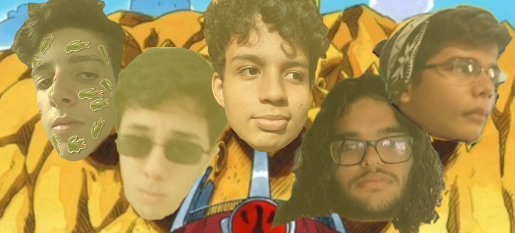

Senhoras e senhores, bem vindos ao site dos Galados Galantes! Somos um time de League of Legends completamente amador e dotado de jogadores péssimos. Este site foi criado apenas visando a diversão dos membros da equipe e da comissão técnica, que é formada por 5 jogadores tóxicos, ruins, feios e semi-drepressivos. A comissão técnica é formada por um coach coreano importado direto da avenida paulista, uma estudante de psicologia que assiste nossos jogos e a namorada do support que é a única que ainda tem fé e torce por nós de algum modo (obrigado, Elise! s2).
Por favor, veja o perfil dos nossos jogadores clicando em seus links na barra de navegação, nos encontraremos jogando mal e feedando dentro dos campos de batalha de Summoners Rift, ou melhor, Samuels Drift
